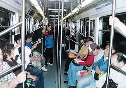

Para empezar, se tiene que hacer un recuento de las epidemias que han azotado a la humanidad y en tomando estas en cuenta, poder analizar como la humanidad ha aprendido a transportarse en tiempos de crisis y como hoy en día con el covid-19 seguimos adaptándonos para sobrellevar esta pandemia y así poder continuar con nuestras vidas.
A continuación, estará una lista de las pandemias o epidemias más importantes que ha atravesado la humanidad:
En las epidemias del pasado abarcando desde la peste de justiniano hasta la viruela ocurrieron en etapas tempranas de la civilización humana por lo que se vio muy afectada la sociedad de aquel entonces y esto se deriva de que como no se tenía conocimiento certero de que era una enfermedad como tal se le adjudicaba la misma con un poder sobrenatural y en ocasiones no se le trataba con el debido cuidado con el que se trataría una enfermedad del tal magnitud y por eso llego al punto de tener que confinar a los pocos habitantes que quedaban en sus casas a algunos a esperar el día de su muerte esto por no existir tratamientos ni medicinas eficientes y durante mucho tiempo se detuvieron las actividades comerciales más que para evitar la propagación de la enfermedad fue porque se tuvieron bajas humanas considerables llegando a reducir en grandes cantidades las poblaciones de los lugares en los que se desarrollaron los focos de infección.
Así que se puede decir que como en aquellos tiempos el transporte de personas o de productos no era tanto como el de la sociedad globalizada de hoy en día se podría decir que llego el punto en el que se pauso todo tipo de actividad y movimiento trayendo esto consigo carencias de muchos recursos esenciales llevando a una situación precaria a las pocas personas que todavía seguían con vida.
Pasando a las epidemias un poca más actuales abarcando de la gripe española a la gripe de Hong-Kong y posteriormente al descubrimiento del VIH se puede tener una vista más amplia de como afecto esto a la movilidad debido a que como se trata de una época más reciente se tienen más datos y estadísticas que en otras épocas, podemos empezar por decir que muchas de las medidas sanitarias que hoy se implementan tienen sus orígenes en estas epidemias y gracias a ellas se han mejorado para su mayor efectividad pero a pesar de los avances no se ha podido evitar que muchas de nuestras actividades se vean afectadas y pausadas y en ocasiones los más fundamental y en ellas está el transporte y con un estilo de vida moderno es indispensable.
